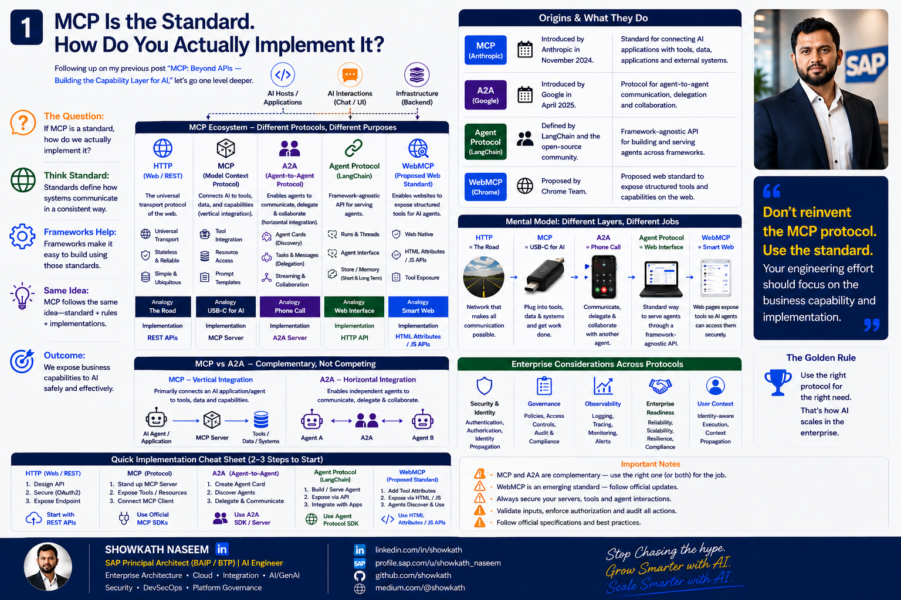
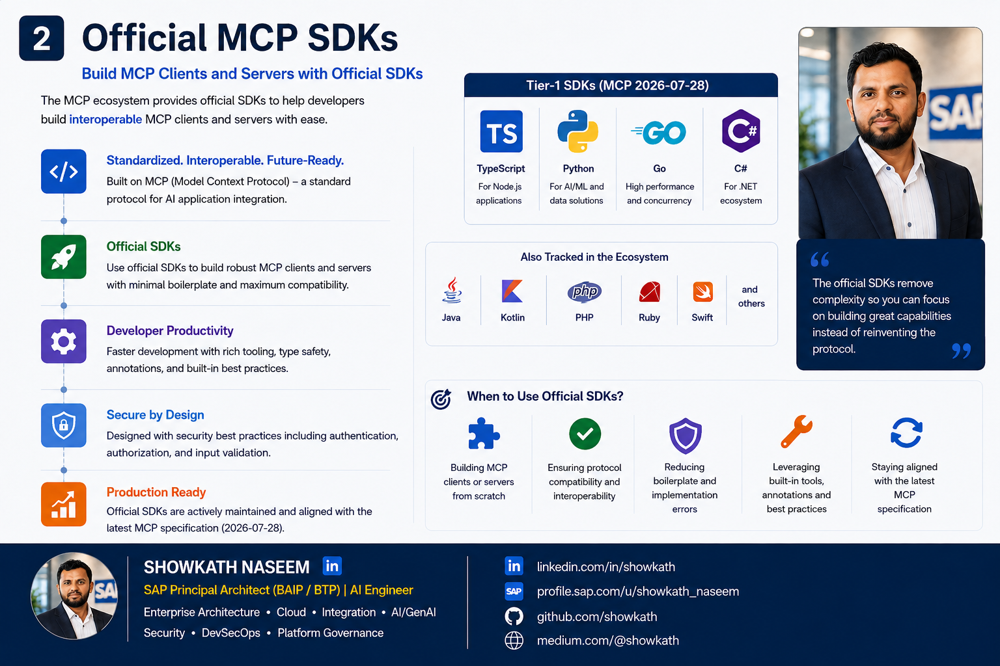
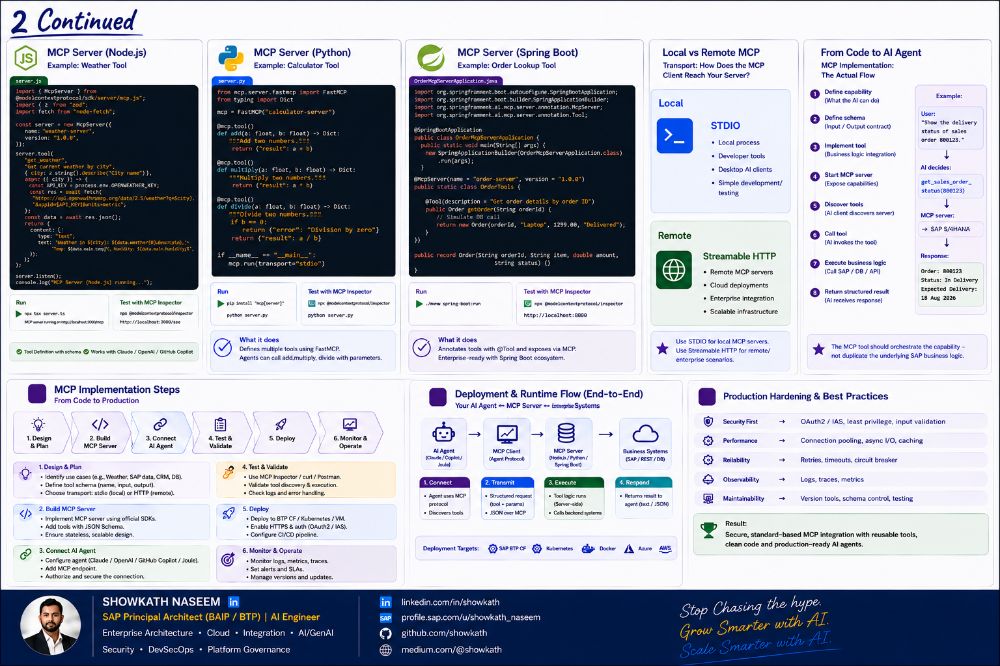
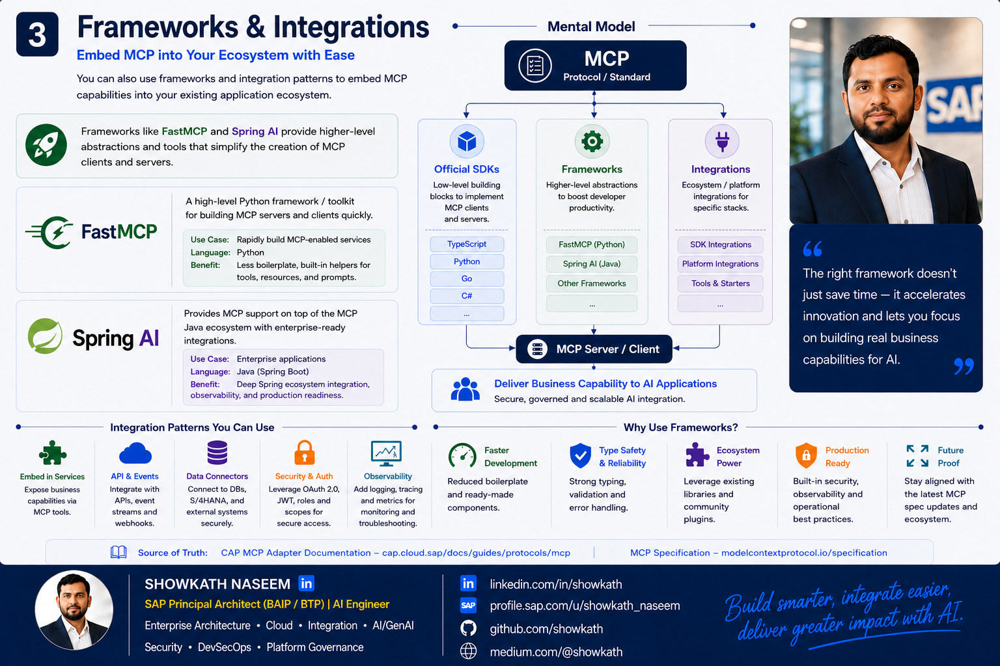
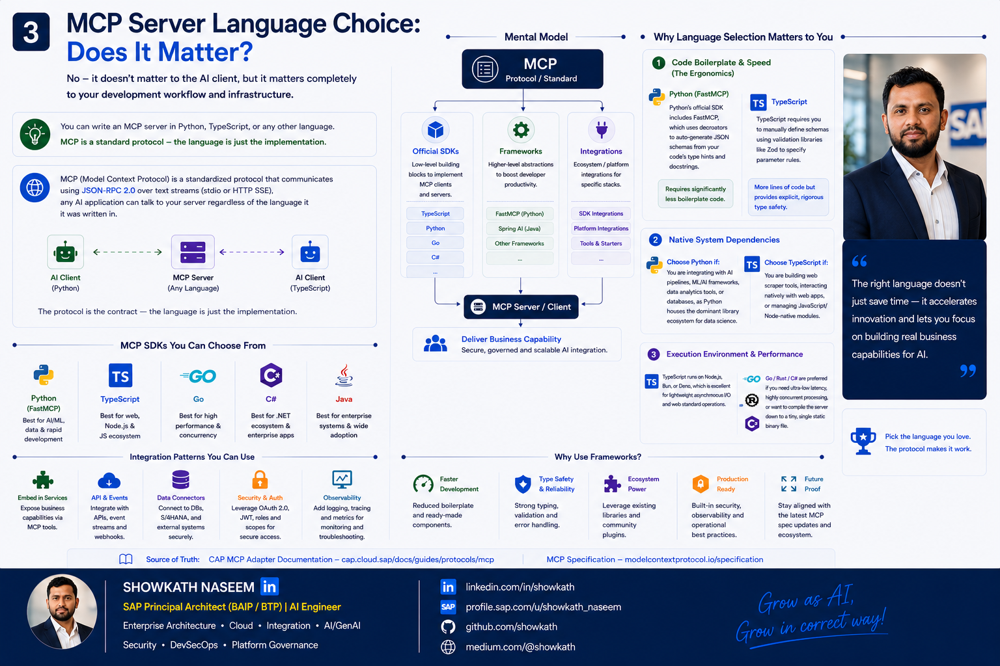
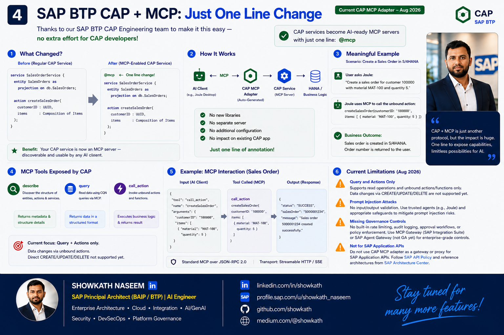
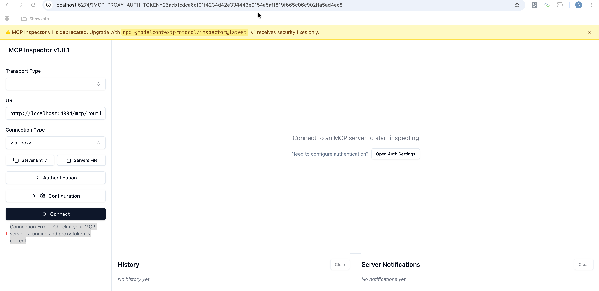
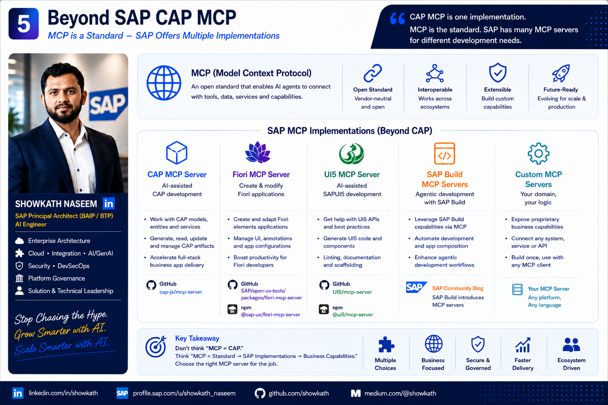
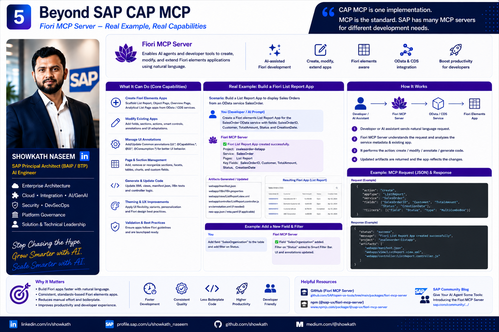
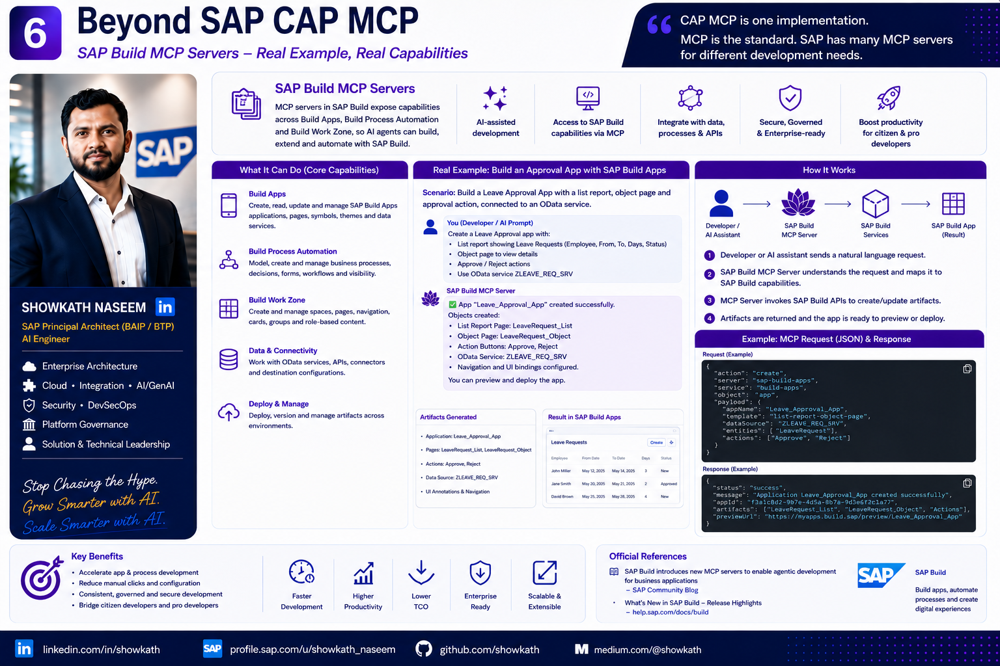

Engineering MCP & AI Agents with SAP BTP and CAP
A senior architect's field guide: how to design and engineer Model Context Protocol and AI-agent solutions on SAP BTP and CAP — where each pattern fits, and how to keep business logic, security, and governance exactly where they belong.
Following up on my previous post, “MCP: Beyond APIs — Building the Capability Layer for AI.”
The first article covered the why. This time we go one level deeper — from MCP and Agents theory to working implementation on SAP BTP. Five questions guide the journey:
- 1How do you build an MCP server?
- 2Which language & framework should you choose?
- 3How do you connect an AI agent?
- 4How do you expose governed business capabilities?
- 5What does it take to go from code to production?
1 Why MCP + Agents matter for enterprise applications
Enterprises already have the hard part built: governed business capabilities in S/4HANA, SAP Sales & Service Cloud, SAP-BTP extensions, and CAP services with real domain models, validations, and authorization. The gap is consumption: how do LLM-powered agents safely reason over and act on those capabilities without every team inventing a bespoke integration?
The Model Context Protocol (MCP) — introduced by Anthropic in November 2024 — gives us a standard way to expose tools, resources, and prompts to agents. Instead of N custom glue layers per model and per tool, MCP provides one interoperable contract between the reasoning layer and the capability layer.

🧩 In plain English — what Figure 1 is really saying
Forget the jargon for a second. Here is the whole picture using everyday analogies:
-
🤖
The Agent= a smart assistant
An AI (LLM) that can think and plan — “the user wants X, so I should look up Y and then do Z.” It has ideas, but on its own it can't actually reach into your systems.
-
🔌
MCP= like a USB port
One standard plug. Just like any USB device fits any USB port, any MCP-enabled agent can “plug into” any MCP tool — no custom cable per device, no glue code per model.
-
🌐
HTTP / APIs= the roads & postal system
The reliable delivery network underneath. MCP doesn't replace your APIs — it rides on top of them, the same way a USB device still uses electricity underneath.
-
📞
Agent-to-Agent (A2A)= a phone call between colleagues
When one assistant needs another specialist, it “calls” them and they talk. A2A lets agents delegate and collaborate — like calling a co-worker who's an expert in something you're not.
Putting it together: the agent 🤖 thinks, plugs into tools through the MCP 🔌 “USB port,” those tools travel over HTTP 🌐 “roads,” and when it needs help it phones another agent via A2A 📞. Your business system stays in charge of what is actually allowed.

MCP does not add intelligence. It adds standardized, discoverable access to the capabilities you already govern. The value for the enterprise is reuse + governance, not novelty.
2 The problem with traditional AI integrations
Before MCP, wiring an LLM to enterprise systems tended to fail in predictable ways:
Bespoke glue everywhere
Each model, each tool, each team built one-off function-calling adapters. No reuse, high TCO, brittle upgrades.
Business logic leaks into prompts
Eligibility, pricing, and approval rules ended up embedded in prompt text — non-deterministic and unauditable.
Direct DB / raw API access
Agents were pointed straight at tables or ungoverned endpoints, bypassing validations and authorization.
No governance boundary
“The model can call it, so it may call it.” Tool availability was confused with business authorization.
The failure mode is architectural, not technical: reasoning and business authority get blurred together. MCP + CAP lets us separate them cleanly — the agent reasons, CAP decides what is allowed and correct.
3 MCP explained simply
Strip away the hype and MCP is a small, precise set of roles:
| Term | What it actually is | What it is not |
|---|---|---|
| LLM | The language model that generates text and proposes tool calls. | Not an agent; it has no memory, tools, or authority by itself. |
| AI Agent | The reasoning + orchestration component: plans, chooses tools, loops, and decides when to act. | Not the MCP protocol; not the business logic owner. |
| MCP Client | Lives inside the agent host; discovers and invokes tools over MCP. | Not a decision-maker; a transport/discovery component. |
| MCP Server | Exposes tools, resources, and prompts to clients in a standard shape. | Not a place to dump business logic or bypass authorization. |
| Capability | The real enterprise function behind a tool — a CAP action, API, event, or rule. | Not the LLM; the LLM only invokes it. |

The end-to-end chain
User │ ▼ AI Application / Agent ← reasoning, planning, orchestration │ ▼ LLM ← proposes which tool to call, with what arguments │ ▼ MCP Client ← discovers & invokes tools over MCP │ ▼ MCP Server ← exposes tools / resources / prompts │ ▼ Enterprise Capability ← the governed business function │ ▼ CAP / BTP / SAP / Non-SAP ← domain rules, validation, authorization, data
MCP is not an agent. MCP is an interoperability / context / tool-access protocol. The agent is the reasoning and orchestration component that decides when and how to use capabilities. And an LLM never provides authorization — authorization is an enterprise concern that lives in CAP / BTP.
4 MCP vs API vs A2A — and “MCP is not a replacement for APIs”
These three coexist. They solve different problems and operate at different layers.
| Concern | API (OData/REST/GraphQL) | MCP | A2A |
|---|---|---|---|
| Primary consumer | Systems & developers | AI agents / LLMs | Other agents |
| Contract style | Stable, versioned, typed | Discoverable tools/resources (may evolve) | Agent cards & tasks |
| Purpose | System-to-system integration | Agent-to-capability access | Agent-to-agent collaboration |
| Introduced | Long established | Anthropic, Nov 2024 | Google, Apr 2025 → Linux Foundation |
APIs remain the stable, versioned system-to-system contract. MCP is an AI-oriented interaction layer that exposes existing capabilities to agents. Concretely:
- APIs stay as the durable integration backbone.
- MCP surfaces governed capabilities to agents — it should not duplicate backend logic.
- Business logic stays in the appropriate domain service (CAP), not in the MCP tool.
- An agent should not manipulate a database directly just because an MCP tool could allow it.
- Security, authorization, validation, auditability, and governance remain enterprise architecture concerns.
WebMCP experimental is a proposed web standard for exposing structured web-page capabilities to agents (being explored in Chrome). The MCP spec itself is evolving fast — the 2026-07-28 release introduced a stateless protocol core, multi-round-trip requests, cacheable discovery, and authorization hardening. Treat the protocol surface as a moving target and keep your stable contracts in APIs.

5 Agent architecture — where reasoning ends and business authority begins
The single most important architectural line in an agentic system is the boundary between reasoning (non-deterministic, in the agent/LLM) and business authority (deterministic, governed, in CAP/BTP). Get this line right and everything else follows.
┌─────────────────────┐
│ User / UX │
└──────────┬──────────┘
▼
┌─────────────────────┐
│ AI Agent / LLM │ reasoning & planning
│ (non-deterministic)│ → NO business rules here
└──────────┬──────────┘
▼
┌─────────────────────┐
│ MCP Client │ discovery & invocation
└──────────┬──────────┘
▼
┌─────────────────────┐
│ MCP Server │ tool / resource
│ discovery & access│ exposure only
└──────────┬──────────┘
▼
┌────────────────────────────────┐
│ Enterprise Services │ ← business authority
│ │
│ CAP | APIs | Events | Rules │ validation
│ Integration | SAP | Non-SAP │ authorization + audit
└────────────────────────────────┘

The agent plans and sequences. It may be wrong — so the enterprise layer must remain the source of truth. Every write path enforces its own validation and authorization, independent of what the agent “intended”.
6 SAP BTP + CAP architecture — CAP as the business capability layer
On SAP BTP, CAP is the natural home for the capability layer. Rather than pushing logic into the agent, keep it in CAP where it is modeled, tested, secured, and observable.
CDS domain modeling
Entities, associations, and semantics that give agents meaningful, well-described context.
Services & boundaries
Projections define exactly what is exposed — a natural authorization and exposure boundary.
Actions & functions
Business operations (e.g. requestWriteOffApproval) as first-class, governed verbs.
Authorization
@requires / @restrict enforce roles & scopes via XSUAA/IAS — regardless of caller.
Validation & rules
Input validation and business rules in handlers — deterministic, testable, auditable.
Clean core & lifecycle
Side-by-side extensions keep S/4 clean; services version and evolve independently.

From CAP's perspective, MCP is just another protocol it can serve — like OData, GraphQL, REST, or HCQL. You are not building a new backend for AI; you are exposing an existing governed one through an agent-friendly protocol.
7 The CAP MCP Protocol Adapter
CAP provides a native MCP Protocol Adapter evolving.
Any CAP service can be turned into an MCP server by annotating it with @mcp — agents
and LLM-powered tools can then interact with it without additional implementation work.
Node.js
Java
What the adapter generates
The adapter creates an MCP server per CAP service, each exposing standard tools:
| Tool | Purpose |
|---|---|
describe | Returns entities, elements, unbound actions/functions so the agent understands the model. |
query | Reads data — parameters are translated to a CQN query and run via service.run(query). |
call_action | Invokes unbound actions/functions with validated parameters. |
The generated tools currently focus on reading data and calling unbound actions/functions.
Data changes are done through unbound actions (e.g. submitOrder), not direct
CREATE/UPDATE/DELETE tools yet. Future versions may add write operations. Also note the docs warn
that these tools are not a stable API — for stable contracts, keep using OData/REST/GraphQL.
Better context for the agent
The adapter surfaces your doc comments and @title/@description annotations
in describe, and you can steer agents with @mcp.instructions:
Note: doc comments are Node.js only; in Java use @title / @description.
Local testing — MCP Inspector & auto-wired clients
When you start the app, the adapter auto-registers MCP servers with local MCP clients (currently Claude Code and Opencode), so you can query immediately. To inspect tools directly:

@mcp exposes a service so an external agent can use it as a tool. Its sibling
plugin @cap-js/agents goes one step further — it turns a CAP service into a running
agent with an A2A endpoint, again from a single annotation. That's the focus of the next section.
8 CAP Agents — one annotation, a running agent (@agent)
Where @mcp makes a service callable by an agent, @cap-js/agents
community / evolving makes the service be an agent.
Annotate a CDS service with @agent and the plugin mounts an A2A endpoint for it —
lots of capability for one annotation, with no custom agent-loop code to build or maintain.
@agent annotation turns an existing CAP service into a governed, A2A-exposed agent — with three ways to define behaviour.@agent is like flipping one switch to give your existing service a “front desk” an AI can talk to — and @agent.hitl means a human must approve before it does anything risky.Three ways to build agents
All approaches start from a CDS service annotated with @agent. They differ only in
how the agent's behaviour is defined. (Current capabilities — more may arrive as the plugin evolves.)
1 · Agentify existing CAP services
With @agent alone, the plugin auto-generates tools from the service's entities and
actions, creates a ReAct agent loop, and serves it as a remote agent — no code required.
2 · Markdown-based agents
To define an agent's identity, behaviour, and skills explicitly, add a sibling directory matching the slugified service name. When present, it replaces the default agentification: instead of the auto-generated ReAct agent, the plugin auto-builds the agent from the directory at startup — no JavaScript handler required.
AGENTS.md defines who the agent is. The frontmatter populates the agent card;
the body becomes the agent's system prompt.
3 · Human-in-the-loop (@agent.hitl)
Annotate a CDS action with @agent.hitl to require human approval before the agent may
execute it. When the agent decides to call the action, the task pauses and transitions to the A2A
input-required state instead of running immediately.
No custom code, no custom MCP adapter, no hand-built agent loop. You can turn an existing
CAP project into both an MCP server (@mcp) and a governed agent
(@agent) with single annotations — keeping business logic, validation, and
authorization in CAP while reducing code to build, maintain, and secure. That's the SAP CAP goal:
capabilities out of the box, lower TCO.
@cap-js/agents is a community, evolving plugin — not a GA SAP product feature.
Validate against the official repo before production, and remember: @agent exposes an
interaction surface, while authorization and business rules still live in CAP.
Use @agent.hitl for any high-impact write.
Reference: github.com/cap-js/agents · npm @cap-js/agents (includes a sample working project).
9 Hands-on — MCP & Agents with BTP CAP (Node.js, then Java)
Enough theory — here are two end-to-end walkthroughs on the same enterprise capability: an Account & Contract Intelligence service that reads account context, evaluates entitlements deterministically, and requests a write-off under human approval. First in CAP Node.js, then the equivalent in CAP Java.
The same service exposed as (a) an MCP server via @mcp and (b) a governed
agent via @agent — with authorization, validation, and human-in-the-loop kept in CAP.
A · CAP Node.js
1 · Project & plugins
2 · Domain model — db/schema.cds
3 · Service + MCP + Agent — srv/account-service.cds
4 · Business logic — srv/account-service.js
5 · Run & test
Three annotations (@mcp, @agent, @agent.hitl) turned a normal CAP
service into an MCP server and a governed agent. The eligibility rule stays deterministic in a
handler, the write is validated and audited server-side, and the agent must pause for approval.
B · CAP Java
The same model and service — CAP Java uses the MCP adapter dependency and annotations, with handlers in Java.
1 · Add the MCP adapter — srv/pom.xml
2 · Service — srv/account-service.cds
3 · Handler — AccountIntelligenceHandler.java
4 · Run & test
| Aspect | CAP Node.js | CAP Java |
|---|---|---|
| MCP enablement | npm add @cap-js/mcp + @mcp | cds-adapter-mcp dependency + @mcp |
Agents (@agent) | @cap-js/agents plugin | Use @mcp + external agent / A2A verify support |
| Context for LLM | Doc comments /** … */ + @title | @title / @description (no doc comments) |
| Handlers | JavaScript this.on(…) | Java @On event handlers |
| Default port | 4004 | 8080 |
Snippets are illustrative and simplified for clarity. The MCP adapter and @cap-js/agents
are evolving — confirm the current API, agent support for Java, and generated tool behaviour against the
official CAP MCP guide
and the cap-js/mcp /
cap-js/agents repos before production.
10 Custom MCP servers & FastMCP — when they are the right tool
For CAP applications, the default should be the native CAP MCP adapter — it covers the large majority of standard scenarios without a separate custom layer. But custom MCP servers (including Python FastMCP open source) remain valid for specific cases.
✅ Good fit for custom MCP
- Cross-system orchestration outside normal CAP service boundaries.
- Specialized or non-CAP tool contracts.
- Experimental or prototype integration patterns.
- Bridging non-SAP systems that have no CAP representation.
⚠️ Guardrail
A custom MCP server should compose with CAP — calling CAP services for business logic and honoring CAP authorization — rather than duplicating rules or bypassing security.
FastMCP is not CAP-native MCP. FastMCP is a Python framework for hand-building MCP servers. The CAP MCP Protocol Adapter is a native CAP protocol layer. Choosing FastMCP means you own the transport, auth wiring, tool contracts, and lifecycle yourself — a deliberate trade-off, not a default.


11 Enterprise integration patterns
Pattern 1 — CAP service exposed through MCP
Architecture: annotate an existing CAP service with @mcp; agents consume generated tools.
- Benefits: minimal code, business logic + authorization stay in CAP, one governance model.
- Limitations: tool surface is read/action-oriented today; tools aren't a stable API.
- Security: CAP
@requires/@restrictand identity propagation still apply.
Pattern 2 — Dedicated custom MCP server
Makes sense when the capability is genuinely cross-system or the contract is bespoke. Keep it thin — orchestrate CAP/APIs, don't re-implement them.
Pattern 3 — FastMCP-based implementation
A Python service exposing MCP tools that call governed CAP/BTP APIs. Fits data-science-adjacent or non-SAP bridging work. Not a replacement for the CAP-native adapter in CAP projects.
Pattern 4 — MCP as an AI access layer over existing APIs
Reuse durable enterprise APIs rather than duplicating backend logic. The MCP tool is a thin, governed façade — the API remains the contract of record.
Pattern 5 — Agent + multiple MCP servers
AI Agent
│
┌──────────┼──────────┐
▼ ▼ ▼
CAP MCP Integration Data /
Server MCP Knowledge
│ │ │
▼ ▼ ▼
Business SAP / Enterprise
Services APIs Context
One agent composes specialized MCP servers: CAP for governed business actions, an Integration MCP for SAP/non-SAP APIs, and a knowledge/data MCP for grounding context. Each server keeps its own authorization boundary — the agent orchestrates, it does not centralize authority.
Pattern 6 — Agent + rules + recommendations (agentic orchestration)
User Intent
▼
Agent (plan)
▼
Retrieve Customer / Account Context ← CAP query (read)
▼
Evaluate Eligibility / Entitlement Rules ← CAP function (deterministic)
▼
Get Recommendation ← recommendation service / SAP AI
▼
Explain Recommendation ← LLM narrates, cites rule results
▼
Optional Business Action ← CAP action (write, restricted)
▼
Audit / Human Approval ← @agent.hitl + audit log
This is agentic orchestration, not CRUD. The rules stay deterministic in CAP, the LLM only explains and sequences, and any write is gated by authorization + human approval.

12 A simple, familiar scenario — an AI pizza-ordering assistant 🍕
Before the enterprise details, let's use something everyone understands: ordering a pizza. Imagine a pizza shop adds an AI assistant so you can just chat — "I'd like a large pepperoni delivered to my home." The assistant is friendly and smart, but the shop's own system must still decide what's actually allowed: is the store open? do they deliver to your street? did the payment go through?
The AI can take your order in plain English, but it must never invent prices, ignore the delivery area, or mark an order paid on its own. Those decisions belong to the shop's system — exactly like an agent belongs on top of CAP, never in place of it.
What happens when you say "order me a pizza"
| Step | Pizza shop (everyday words) | What it maps to in CAP | Type |
|---|---|---|---|
| 1. Understand you | "They want a large pepperoni, delivery." | Agent + LLM reasoning | Just thinking — no authority |
| 2. Check the menu | Look up the pizza and its real price | MenuService.read (governed read) | Read |
| 3. Can we deliver to you? | Is your address inside the delivery zone? | checkDeliveryArea() — a fixed rule | Deterministic rule |
| 4. Suggest & confirm | "That's €14.90. Shall I place it?" | Advisory recommendation | Advisory (explainable) |
| 5. Place & pay | Charge the card and create the order | placeOrder() — @requires + @agent.hitl | Write (money!) |
| 6. Give a receipt | Order #A1234, out for delivery | Immutable audit record | Write |
Steps 2–4 are safe: reading the menu and suggesting a pizza. Step 5 is the dangerous one — it takes real money. So it needs a stronger permission and a final "yes, place it" confirmation (human-in-the-loop). The AI proposes; the shop's system decides and records.
The same pizza shop as tiny CAP code
Here is the whole idea in a few lines — a menu to read, a delivery-area rule, and a paid order that needs human confirmation.
Notice the shape: a governed read (menu), a deterministic rule (checkDeliveryArea),
and a money write behind human approval (placeOrder + @agent.hitl).
That's exactly the enterprise write-off flow in the next section — only the words change.
Swap "pizza shop" for a SAP Sales Cloud / CRM extension on BTP and the pattern is identical: an assistant helps an account manager handle an overdue balance write-off. Reading the account and checking entitlements are the "menu & delivery-area" steps; approving the write-off is the "place & pay" step — a governed write with a stronger role and human approval. Same rules, higher stakes. The next section shows that exact enterprise version running end-to-end, with real code and output.
13 Real-world scenarios — end-to-end implementation & output
Two complete, runnable walkthroughs on the CAP Node.js service from Section 9. Each one shows the full round trip: the user's natural-language intent, the agent's tool calls over MCP, the exact request/response JSON, and the audit trail CAP produces. Nothing is hand-waved — this is what actually flows across the wire.
The CAP Node.js implementation behind these scenarios
Everything below runs on this one small CAP app. Three files — a data model, a service with
@mcp/@agent, and the business logic — produce all the responses in Scenarios A & B.
1 · Data model — db/schema.cds
2 · Service + MCP + Agent — srv/account-service.cds
3 · Business logic — srv/account-service.js
The two this.on(...) handlers above are the only place decisions are made. Every JSON
response in Scenarios A & B — the eligible flag, the PENDING_APPROVAL status,
the 403 over-cap error — comes straight out of this deterministic CAP logic, not the LLM.
Scenario A · Overdue write-off under human approval
An account manager asks the assistant to clear a small overdue balance. The agent reasons, but every decision and write is enforced by CAP — including a human approval gate on the money.
0 · Seed data — db/data/crm-Accounts.csv
1 · The user's intent (natural language)
2 · Agent → MCP: load account context
3 · Agent → MCP: evaluate entitlements (deterministic rule)
4 · Agent → MCP: request write-off (HITL gate fires)
5 · What the user sees
6 · The audit trail CAP produced
The agent reasoned and orchestrated, but eligibility came from a deterministic CAP rule, the write required a stronger role, and the money is gated behind human approval and an immutable audit record. Swap the LLM tomorrow — the guarantees don't change.
Scenario B · Denied request — guardrails hold
Same tools, different account. Here the deterministic rule and CAP validation reject the request — proving the guarantees are enforced by the platform, not by prompt wording.
1 · Intent
2 · Entitlement check says no
3 · If the agent tries the write anyway, CAP rejects it
4 · What the user sees
Run cds watch, then open the MCP Inspector
(npx @modelcontextprotocol/inspector) against
http://localhost:4004/mcp/account-intelligence. Call the tools in the order above with the
seed data and you'll see exactly these responses — including the 403 when the amount exceeds the cap.
| Guarantee | Enforced by | Visible in output |
|---|---|---|
| Only analysts read accounts | @requires: 'AccountAnalyst' | 401/403 on unauthorized query |
| Eligibility is deterministic | evaluateEntitlements() handler | reason string cites the rule |
| Writes need a stronger role | @requires: 'AccountManager' | 403 for analyst-only callers |
| Money needs a human | @agent.hitl | PENDING_APPROVAL status |
| Everything is auditable | CAP handler + managed | ApprovalRequests row w/ identity |
The JSON tool names and payload shapes above are illustrative of the CAP MCP adapter's shape and may differ slightly by plugin version. The architecture — governed reads, deterministic rules, role-gated writes, HITL, and audit — is the part that must not change.
14 Security & governance — the heart of the architecture
Giving an AI agent access to a capability is an architectural authorization decision, not a technical configuration. And tool availability ≠ business authorization. The fact that an MCP tool exists says nothing about whether this agent, for this user, may invoke it.
Identity & access
- Authentication via XSUAA / IAS on BTP.
- Identity propagation — act as the user, not a super-principal.
- OAuth scopes, role collections, least privilege.
- Tenant isolation in multitenant apps.
Tool-level controls
- Per-tool / per-action authorization (
@requires,@restrict). - Stronger controls on writes than reads.
- Input validation on every action.
- Sensitive-data filtering & field-level restrictions.
AI-specific threats
- Prompt injection → never let text alone trigger writes.
- Malicious / confused tool invocation.
- Excessive permissions granted to agents.
- Human-in-the-loop for high-impact actions.
Operability
- Audit logging of every tool invocation.
- Observability & tracing across the chain.
- Rate limiting & API policies (Integration Suite / API Management).
- Lifecycle & versioning of exposed capabilities.
Read operations expose information; write operations change enterprise state. Writes should require stronger scopes, tighter validation, human approval where impactful, and immutable audit — by default.
15 MCP & agentic architecture anti-patterns
✕ 1. Logic in the prompt
Encoding eligibility/pricing/approval rules in prompt text.
✕ 2. Agent → database directly
Pointing an agent at tables or the persistence layer.
✕ 3. MCP server per tiny function
Sprawl of micro-servers with no domain boundaries.
✕ 4. Duplicating existing APIs
Re-implementing backend logic inside MCP tools.
✕ 5. Unrestricted write access
Agents that can change anything, anytime.
✕ 6. MCP as an API replacement
Retiring stable contracts in favor of evolving MCP tools.
✕ 7. Custom build when native exists
Hand-rolling MCP where the CAP adapter already fits.
✕ 8. Agent before capability
Building the agent before defining capability + authz model.
✕ 9. AI for deterministic decisions
Letting the LLM decide things that must be governed rules.
✕ 10. Availability = authorization
Assuming a callable tool means it may be called.
16 Architecture decision matrix
| Approach | Best fit | Advantages | Trade-offs |
|---|---|---|---|
| CAP MCP Adapter evolving | Standard CAP scenarios; exposing governed CAP services to agents. | Minimal code; reuses CAP authz, validation, model; lowest TCO; one governance model. | Read/action-focused today; tools aren't a stable API; CAP-centric. |
| Custom MCP server | Cross-system orchestration; bespoke tool contracts; non-SAP bridging. | Full control over tools, transport, contracts. | You own auth, lifecycle, testing, security; higher TCO. |
| FastMCP (Python) community | Python/data-science-adjacent tools; experiments; non-SAP systems. | Fast to prototype; rich Python ecosystem. | Not CAP-native; must compose with CAP for governance; self-managed. |
| Integration Suite MCP | Exposing managed integrations / APIs with central policies. | Policy enforcement, rate limits, monitoring, connectivity. | Adds an integration tier; validate feature availability. |
| Direct API integration | System-to-system; stable, versioned contracts; no agent needed. | Mature, predictable, well-governed. | Not agent-discoverable; needs custom glue for LLM tool-use. |
In a CAP project, start with the CAP MCP adapter. Reach for custom/FastMCP only when the capability is genuinely cross-system or bespoke — and even then, compose with CAP rather than bypass it. Verify Integration Suite MCP feature availability against current SAP docs before committing.
17 Production-readiness checklist
- Business capability, owner, and authorization model defined before building the agent.
- Authentication (XSUAA/IAS) and identity propagation verified end-to-end.
- Per-tool / per-action authorization; writes gated more strictly than reads.
- Human-in-the-loop for high-impact actions (
@agent.hitlor workflow approval). - Input validation and prompt-injection resistance on every write path.
- Audit logging of all tool invocations; immutable trail for write actions.
- Observability & tracing across agent → MCP → capability.
- Rate limiting & API policies for exposed endpoints.
- Tenant isolation validated for multitenant deployments.
- Versioning & lifecycle plan — remember MCP tools aren't a stable API.
- Stable contracts still served via OData/REST/GraphQL for system integration.
- Fallback / failure behavior when the agent or LLM is wrong or unavailable.
18 Think like an architect — questions before protocol
Ask these before writing a single MCP tool. Architecture comes before protocol implementation.
19 Key takeaways
MCP is an interoperability/tool-access protocol, not an agent and not intelligence. The agent reasons; CAP/BTP governs.
MCP does not replace APIs. APIs stay as stable system contracts; MCP is the AI access layer over governed capabilities.
In CAP projects, default to the CAP MCP adapter (@mcp), and turn services into governed agents with @agent (@cap-js/agents). Use custom/FastMCP by exception, and compose with CAP — never bypass it.
Tool availability ≠ authorization. Exposing a capability to an agent is a governance decision; writes need stronger controls than reads.
Keep deterministic decisions in business rules; let the LLM explain and orchestrate, not decide eligibility or manipulate data directly.
20 References & further reading
Official SAP
- SAP Cloud Application Programming Model (CAP)official
- CAP MCP Protocol Adapter guideofficial
- SAP BTP documentationofficial
Open source / community
- cap-js/mcpcommunity
- cap-js/mcp — sample testscommunity
- cap-js/agentscommunity / evolving
- @cap-js/agents on npmcommunity
Protocols & ecosystem
- Model Context Protocolofficial spec
- MCP 2026-07-28 release notesspec update
- A2A Protocolofficial
- WebMCP (Chrome)experimental
- Microsoft Copilot Studio + MCPvendor
The CAP MCP adapter and @cap-js/agents are evolving; generated MCP tools are not a
stable API and current tooling focuses on reads + unbound actions. WebMCP and some agent features
are experimental. Validate feature status against the official links above before production use,
and don't present community/experimental patterns as GA SAP product capabilities.